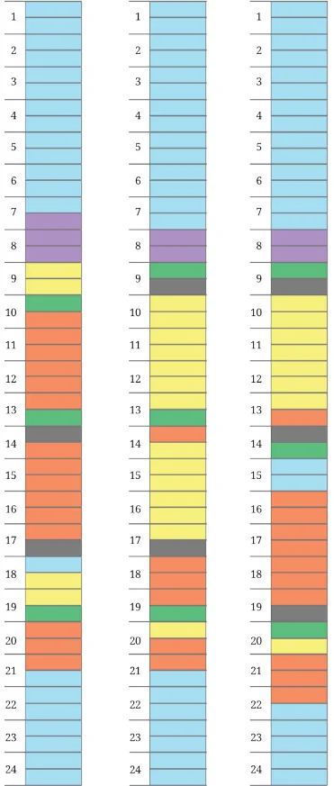

Manoj has an interesting hobby. He makes note of what he does throughout the day. He records his activities by colouring a strip of paper with 48 boxes, marking time in 30 minute intervals from midnight to midnight. He has recorded five types of activities for three different days of the week on three coloured strips, shown to the right.
- (i)Sleeping
- (ii)Eating
- (iii)Meeting friends, hobbies, media, time
with family
- (iv)Attending classes, studying and homework
- (v)Showering and getting dressed, yoga or
exercise
- (vi)Travelling
Look at the three coloured strips carefully.
- (i)What activity does each colour stand for?
- (ii)The three strips correspond to the days
Friday - Sunday in some order. Which day do you think each strip represents?
- (iii)On one of these days, he went out with
friends to watch a long movie. When do you think this happened?
- (iv)At what time does his school break for lunch?
What would your strip for a weekday look like? How similar or different is it to Manoj’s? What would a strip of your typical day during your vacation look ThisTry like? How similar/different would it look?
What would a strip for any of the adults in your family look like? Make a strip of a day for any adult at home. Compare your strip Math Talk with theirs. What do you find interesting?